Reference Sources:
Convolution Wikipedia /
Vanishing Gradient Problem/
Convolutional Neural Networks Guide/
Convolutional Neural Networks Summarize
CNN is basically the most widely used method in computer vision and graphical processing.
Convolution
It is defined as the integral of the product of the two functions after one is reversed and shifted.
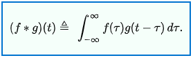
The result of intergration represents how the value of one of those functions merges using another function as the weight.
Pretty like Weighted average using a certain function as the weight.(Distribution Function)
Discrete convolution
For complex-valued functions f, g defined on the set Z of integers, the discrete convolution of f and g is given by:
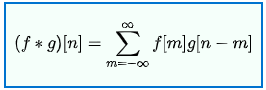
This is widely used in computer programs espacially in computer Graphic Processing (because the memory limit and discrete viewport pixels)
In Discrete Convolution the Distribution Function and input function is always represented as a Vector/Matrix (or higher dimension table)
Visual Intuition of Convolution


Components of CNN
Neural Network(Short intro)
- A series of input value(may be an array).
- Many layers where each layer includes a bunch of nodes.
- Each node is computed with each node/input in the former layer(Fully Connected) using a certain function(Vector or Matrix)
It is like a Black Box Model. We actually do not know what the parameters of the transformation function/matrix should be like. Thus we use machine learning to train it and find the parameters.
How to train?
- Basing on your certain model, define the Cost Function. (Mainly the logistic regression)
- Using optimization algorthm to minimize the cost function.(Mainly SGD)
Convolutional Neural Networks
In spite of using all the input/former layer source, use part of them.
Input Layer
In this layer, we usually do some preprocessing to our graphic input.
A image is formed with a bunch of pixels containing(Red,Green,Blue,Alpha) as Vector4.
Transform into gray image.If we only need to detect the object, to make it easier to train,we usually parse our input image into a Gray Image where the pixels only contain one value(0~255:black~white) It is very useful when detecting edges or detect objects.But it may cause confusion when our classifications do something with color.(Red Apple & Green Apple etc.)De-average & Normalize: Usually the color is represented in Hex code or integer Vector4 with the range of (0,0,0,0)~(255,255,255,255) it is representation friendly but in machine learning we always like to Normalize them and parse them into a float Vector4 with the range of (-1,-1,-1,-1)~(1,1,1,1)
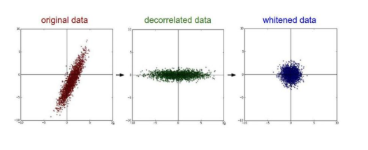
Convolutional Layer
In this layer :
- We take a small window from the form layer and use an unknown matrix to calcutate the result as a node.
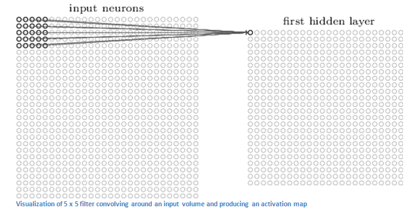 - Shift the window to the next position with a certain step.
- Do them repeatly until finished calculating all the nodes.

Caution ! :
- The parameters of the matrix is unknow(or you can base on other training results and retrain them) and those are what we need to train for.
- The matrix is kind of a filter. It allows a certain shape of graph to come through and produces a very large number.If the shape does not fit, the value will drop quickly.
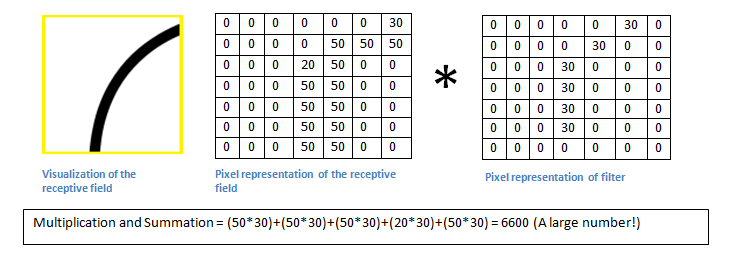
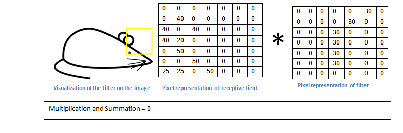 - The step window size and step are chose based on our model.If the step is to big, the convolution may not cover all the image and cause rough changing.On the other hand, too much small step will cause efficiency problem.
Activation Layer
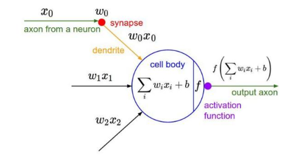
Activation layer is used to analyze the result of Convolutional Layer and gives a basic judgment.
So far, the most widely used activation function is ReLU(The Rectified Linear Unit).
See the graph:
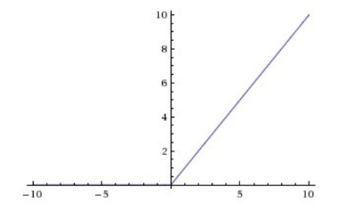
Given experience by poineers:
- DO NOT USE Sigmoid function
- If ReLU performs badly,try “Leaky ReLU” or “Maxout”
- Sometimes
tanhfunction is well performed.
Pooling Layer
In this layer, we mainly do some post processing to our output to simplify the data and features which will train faster.
Usually we compress the image.
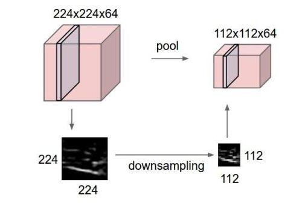
The max pooling(Using the max value)
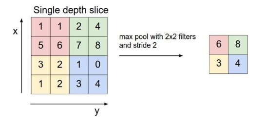
Also average pooling using the average of the window.
Fully Connected Layer
The layer to finally comes to the result, it is at the end of the network.
Structure Overview
- INPUT
- [[CONV -> RELU]N -> POOL?]M
- [FC -> RELU]*K
- FC
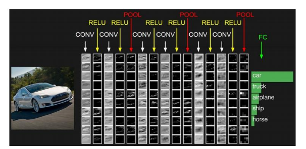